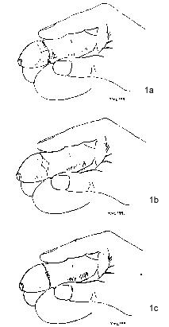

T HE C IRCUMCISION R EFERENCE L IBRARY
T.M. LANE and L.M. SOUTH
Department of Surgery, The Maidstone Hospital, Hermitage
Lane, Kent. UK
There exists a lack of understanding of normal preputial development which is reflected in the large numbers of inappropriate referrals for circumcision. While the scarred prepuce invariably responds best to formal cicumcision a more conservative approach is recommended in those symptomatic patients with non-retractile foreskins. In this study, patients referred to the out-patient department with a phimosis were assessed. Those with a phimosis and secondary preputial scarring were listed for circumcision. Those with a narrowed foreskin and a history of recurrent balanitis or local symptoms such as fissuration, thought suitable for a more conservative approach, were listed for preputioplasty. Those with a phimosis but without local symptoms were reassured and discharged. Thirty patients were referred for preputioplasty. One patient developed a post-operative wound infection which settled with oral antibiotics prescribed by his general practitioner. This left him with further preputial adhesions and he later underwent circumcision. The remaining patients reported no post-operative problems at follow-up. Cosmesis was good with high levels of patient satisfaction expressed. All had easily retractile foreskins at follow-up. Large numbers of patients might reasonably benefit from a lateral preputioplasty when presenting with a symptomatic phimosis in the absence of significant scarring of the prepuce. It avoids the needless loss of the fore-skin, the importance of which is only now beginning to emerge.
Keywords: preputioplasty, circumcision, foreskin
J.R.Coll.Surg.Edinb., 44, October 1999, 310-12
[CIRP note: This article presents an improved surgical technique that promises a small cosmetic improvement over the standard " dorsal slit with transverse closure" preputioplasty technique for relief of narrow foreskin. Lane and South inexplicably fail to mention that medical treatment of narrow foreskin with topical steroidal ointment (usually betamethasone valerate 0.05%) has been documented in numerous reports to be effective in about 90 percent of cases. Medical treatment is an even more conservative treatment of narrow foreskin. Medical treatment is non-painful, much less expensive, completely non-traumatic, and provides even better cosmetic results in the vast majority of cases, than any surgical technique. Nevertheless, this improved techinque seems to be a useful improvement in treating those cases in which surgery is required.]
Phimosis is said to be the physiological condition of the newborn male with a tendency to spontaneous resolution. A fundamental misunderstanding of the normal developmental process by which the prepuce becomes retractile (by a process of desquamation) has lead to large numbers of inappropriate referrals for circumcision. In those symptomatic patients in which surgical intervention is indicated, circumcision has traditionally been regarded as the treatment of choice. However, there are many who might benefit from a more conservative approach - that of preputial plasty.
PATIENTS AND METHODS
Selection Criteria
Children referred by their family doctor to the out-patient department with a phimosis were assessed and categorised along the lines described by Wahlin (1992). 1 Those with a phimosis and secondary scarring resulting in a stiff foreskin were listed for circumcision. Those with a narrow foreskin and a history of recurrent balanitis, voiding problems or local symptoms such as fissuration or bleeding, and thought suitable for a more conservative procedure, were recommended for preputioplasty. Those with a phimosis but without a history of local symptoms were reassured and discharged. Thirty patients recommended for preputioplasty were studied. All were followed up in the out-patients department at between 6-8 weeks following surgery.
Operative Technique
Under general anaesthesia the foreskin is retracted and preputial adhesions released and the glans cleansed. Retraction of the foreskin reveals a clearly defined fibrous ring. Two laterally placed vertical incisions are then made directly over the fibrous ring and the transversely running fibrous bands divided to expose the underlying Bucks' fascia. With the foreskin retracted the defect (now transverse) is closed horizontally with interrupted 4-0 vicryl rapide. Postoperatively, patients are encouraged to retract the foreskin once comfortable to prevent preputial adhesions reforming (Figure 1).
|  | Figure 1 a) Retraction of the foreskin reveals the constriction band. Figure 1 b) A laterally placed incision is made over the phimotic band. Figure 1 c) The transverse defect is closed with interrupted sutures |
Thirty children between the ages of 1-16 years underwent lateral preputioplasty. All underwent day-case surgery under general anaesthesia. Patients were reviewed 6-8 weeks later in clinic.
One patient developed a wound infection post-operatively and required a course of oral antibiotics. Following this he developed further preputial adhesions and subsequently underwent formal circumcision. All others had easily retractile foreskins and their symptoms resolved. Patient satisfaction was high and the cosmesis good. Patients were discharged with no further follow-up.
The normal development of the foreskin involves the separation of the glans and prepuce (both covered by a stratified squamous epithelium) by a process of desquamation which occurs at a variable time after birth. 2 Gairdner 3 found that approximately 90% of boys by the age of five had retractile foreskins, a figure similar to that independently identified by Øster some years later. 4 Its importance lies in distinguishing `pathological' phimosis from the `physiological' non-retractile foreskin. It has been apparent for some time that too many patients are referred for circumcision because of the lack of understanding that there exists of normal preputial development. Non-retractility is the physiological condition of the newborn male with spontaneous tendency towards resolution. There is no role for prophylactic surgical intervention.
Indications for surgical intervention most frequently include recurrent balanoposthitis and local symptoms such as voiding problems and fissuration. Repeated infections may result in a rigid fibrous foreskin and with the changes of balanitis xerotica obliterans. It is characterised by dermal oedema, lymphocytic infiltration and basal cell degeneration with atrophy at the stratum malpighi. 2 While medical and, more recently, laser treatment has been reported successful 5, circumcision remains the mainstay of treatment. However, in that the purpose in the majority of cases is to achieve retractility of a narrowed foreskin to avoid further scarring, a preputial `plasty' should be the preferred option.
Circumcision is associated with considerable morbidity, as it is often delegated to unsupervised junior surgeons, and its associated morbidity is probably greater than that reported from the teaching centres. 6 More recently, concern has been raised over the needless loss of the prepuce. Taylor et al (1996) 7 describe the prepuce as a structural and functional unit, a combination of smooth mucosa and true skin which act together to allow a specialised `ridged band' to be deployed onto the shaft of the penis, providing a surrogate sensitivity to the glans and the penile shaft, possibly mediating the afferent limb of the ejaculatory reflex. While the clinically scarred prepuce (because of recurrent infection or xerotica balanitis obliterans) represent absolute indications for circumcision, the remainder are suitable for more conservative treatment.
A number of preputial plasty techniques have been described. The dorsal split involves both fibrous ring and dorsal prepuce being divided. It is associated with an oedematous and hyper-trophic ventral prepuce and a poor cosmetic result. Holmlund (1997) 8 modified the procedure describing a dorsal incision where the prepuce was retracted to expose the fibrous ring over which an incision was made. The circular fibrous strands were identified and divided with a knife. The incision was closed transversely with interrupted sutures. However, single plasty techniques have tended to give cosmetically unsatisfactory results with an apparent cleft defomity. Multiple incision plasty techniques are also described and are said to spread the deformity around the circumference. 1 These however, along with the more complicated V-Y 9, Z-plasty 10 and helicoid plasty techniques 11 have failed to gain popular acceptance because of the complexity of the procedures, (although they may have a specific role when operating on the microphallus).
A lateral preputioplasty is a simple technique and safely carried out by junior surgeons. It has not been previously described. In particular, it avoids the frenular area of the penis making it a quick, easy and safe operation.
In our experience it is associated with an excellent cosmetic result. Its success was evident by the absence of serious bleeding problems, the improvement in post-operative morbidity and the high level of patient satisfaction. While follow-up was not extended beyond the initial first visit, there is little evidence to suggest that extended follow-up is helpful, as the initial visit appears to accurately reflect the success or failure of the procedure. 1 With increasing evidence of the role of the foreskin a more conservative approach is advocated and, while a scarred prepuce will always need circumcision, a lateral preutioplasty is recommended as a more conservative measure
Copyright date: 8th August 1999
Correspondence: Mr TM Lane, 25 Harmood Street, Camden, London NW18DW, UK
© 1999 The Royal College of Surgeons of Edinburgh, J.R.Coll.Surg.Edinb.,44; 5: 310-12
http://www.cirp.org/library/treatment/phimosis/south1/